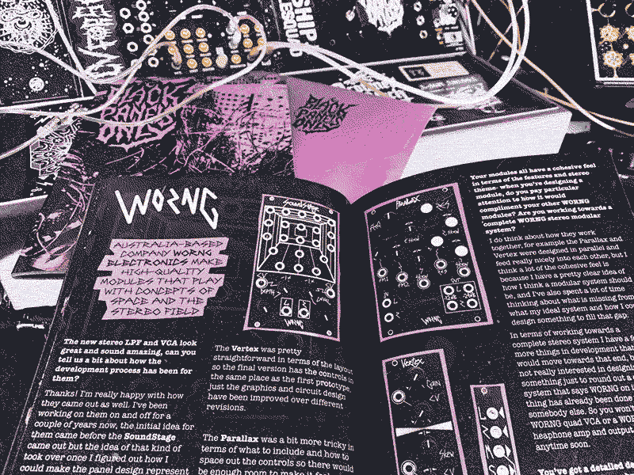
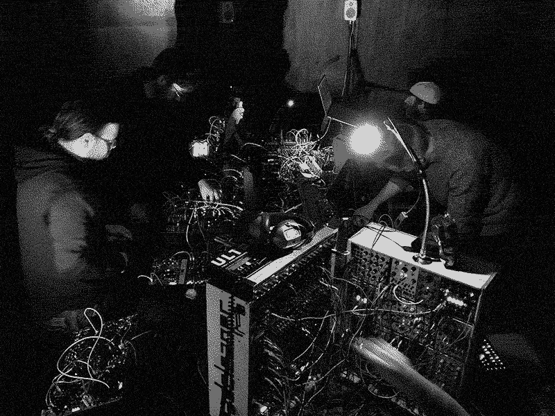
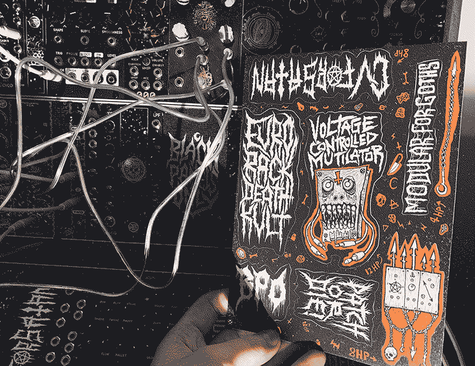
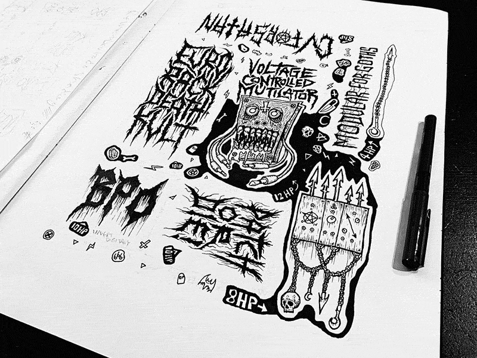
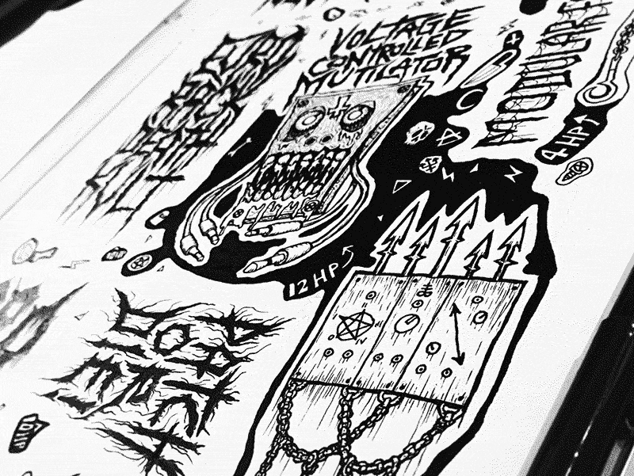
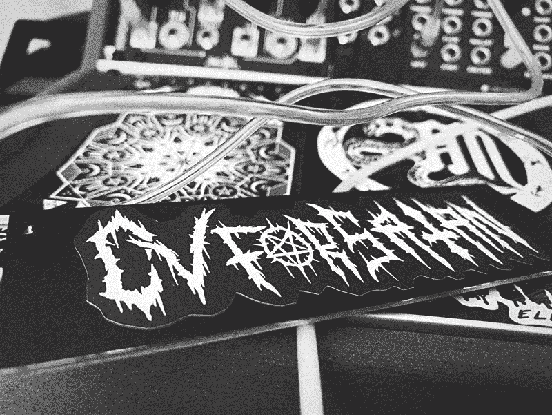

Issue II

I was really happy with how Issue I was received and so was keen to get working on Issue II right away. In terms of visual style, Issue II was pretty much just more of the same but features a few some double-page spreads- at the time I was working on each page individually so wasn’t sure it was going to line-up correctly but they worked. This issue was more collaborative than the first, with some writing and images by other people- which is something I always wanted, rather than the whole zine being in my own tone of voice and it felt easier to accomplish this time, with the first issue already out there for potential collaborators to get the idea/direction of the zine.
The cover photo and inside cover photo are taken from Midlands Modular Synth Meet in Birmingham organised by Leon Trimble (Chromatouch). This was the last event I attended before lockdown and was a really fun event where I would meet RBMK and Steckdose who both contributed to the issue. It was just a bunch of people plugging their synths in and making a load of noise which I imagine is how most synth meet ups go.

The first print run included a free A5 sticker sheet. I always loved the freebies you’d get with magazines when I was a kid and wanted to bring a bit of that back and sticker sheets seemed like a fun thing to do. I designed each sticker so that they should each fit nicely on blank panels and noted the HP sizes on the sheet next to each sticker. The first run featured the red colour from Issue I, then I did a second run of the sheets in the Issue II tone of purple. I kept them as a limited thing because it’s hard to keep various extras in stock all the time but I expect I'll do some more at some point. Maybe a sheet where each sticker is by a different artist could be cool.




Released 17th July 2020.
Features:
- Erica Synths
- Nero Bellum
- WORNG Electronics
- X1L3 by Donovan Stringer
- Jolin Lab
- My Rack - RBMK
- My Rack - Jolin Lab
- Sea Modular art by @poeticasfolk
- Module Review: Instruo øchd by Lewis Burn
- Module Review: Serpens Modular Ara
- My DIY Journey by Ricardo Verschut